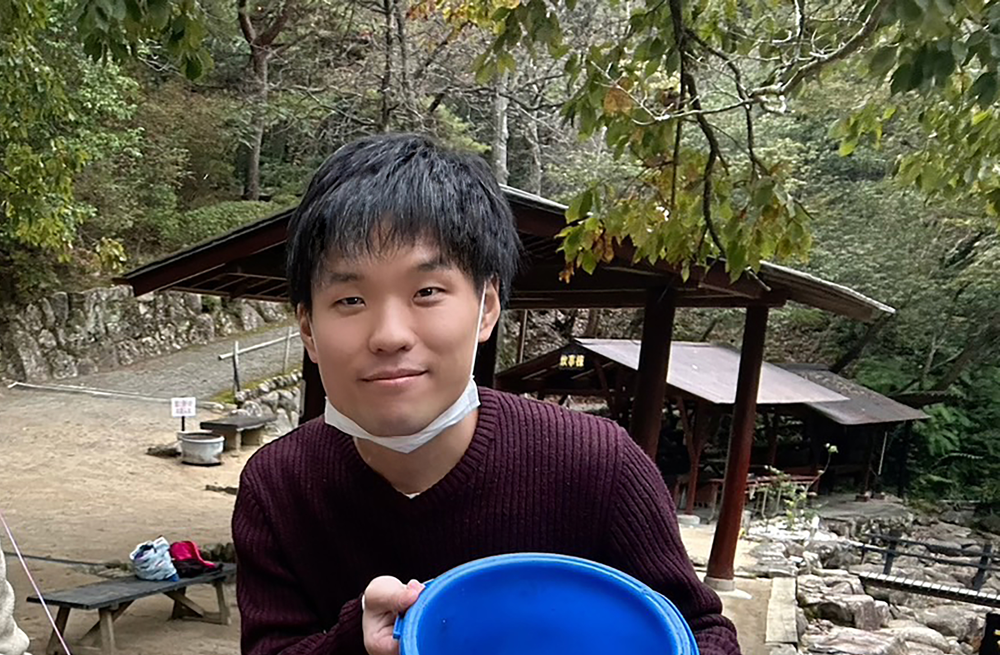

Profile 自己紹介
1991年生まれ大阪府大阪市在住。
2013年に大阪大谷大学を卒業し、和菓子の製造工場に就職。1年ほど就業した後、夜間の写真専門学校に入学。卒業後は子ども写真館に就職しました。
しかし、半年で写真館を退職し、その後は企業向けの砥石の製造工場に就職。
6年ほど砥石の製造に従事してきましたが、
2022年の5月頃からITという分野に興味を持ち始め、独学でJavaの
勉強を開始。その後、Oracle認定資格であるJava Silverを
取得しました。
2023年頃からフロントエンドに興味を持ち始め、独学でHTML、
CSS、JavaScriptの勉強を開始し、現在に至ります。

弓削 貴弘
Infomation 情報
- 出身
- 大阪府大阪市
- 最終学歴
- 大阪大谷大学
- 勉強した言語
-
- - HTML
- - CSS
- - JavaScript
- - Java
- 資格
-
- - 基本情報技術者
- - Oracle Certified Java Programmer, Silver SE 11
- 好きなこと
-
- - ゲーム(APEX)
- - カメラ(Canon EOS 70D)
- - テニス
- - 映画
- - 旅行